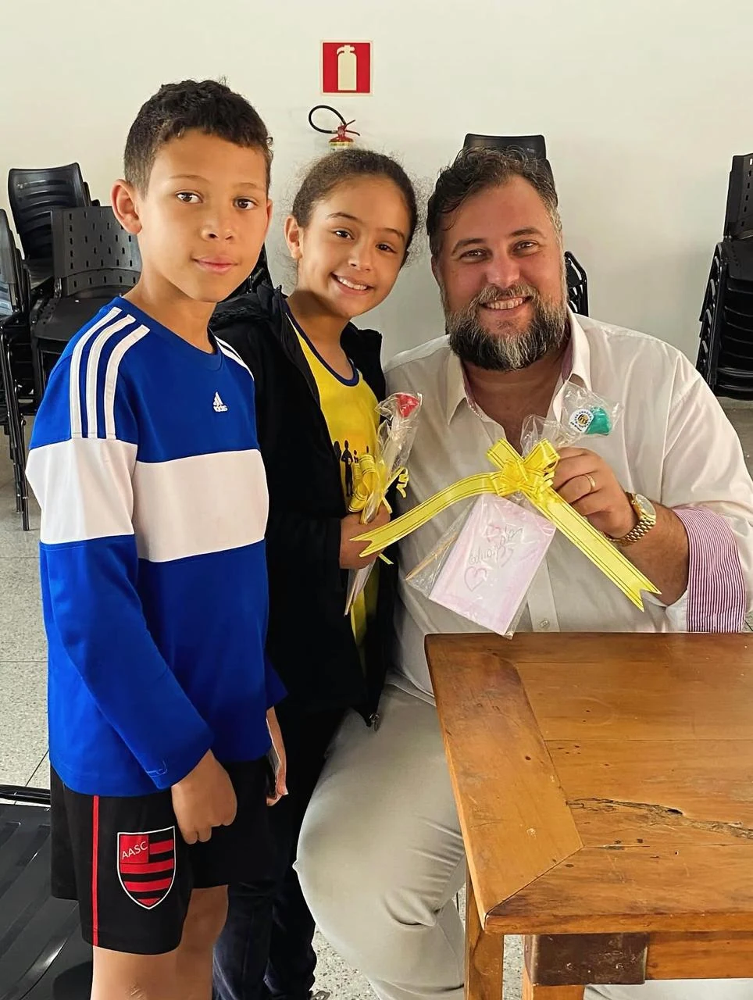
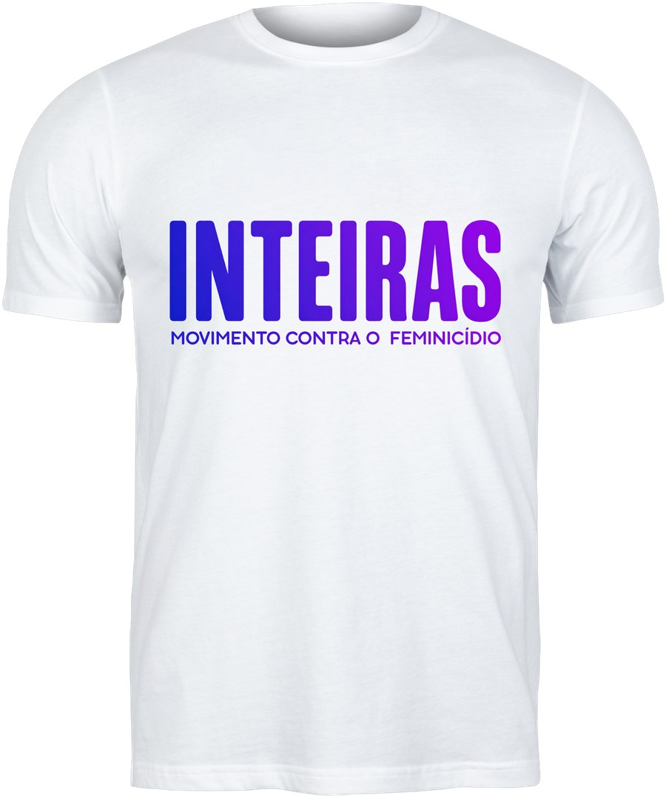
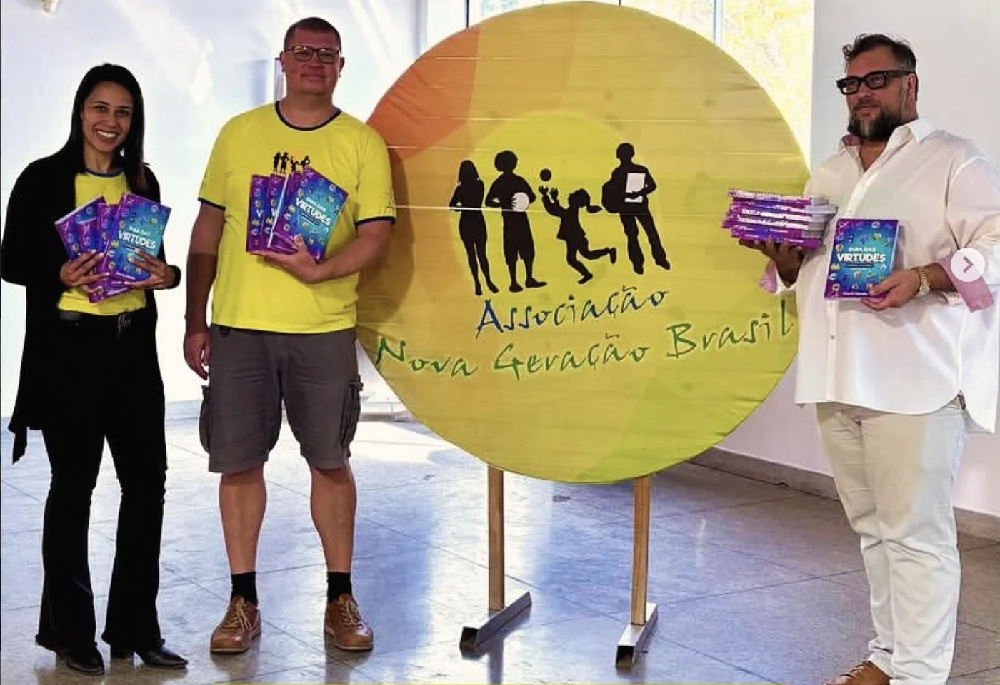
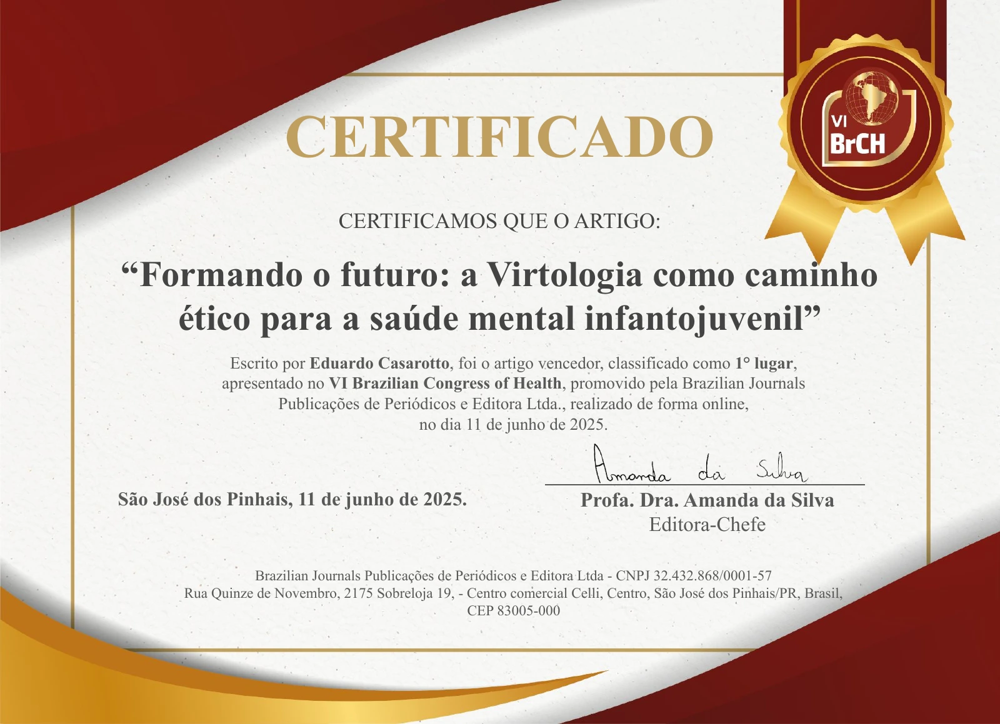

O Novo Eu · Sistema prisional
Para pessoas privadas de liberdade
Estudo, reflexão e prática de virtudes no cotidiano. Utiliza O Novo Eu: as 8 virtudes fundamentais para um caminho da liberdade.
Conheça o programa para PPLProjetos
O trabalho acontece onde o sofrimento é mais concreto: unidades prisionais, comunidades terapêuticas, hospitais, escolas e organizações. A maior parte dos projetos é gratuita, e o método é aberto a quem quiser aplicá-lo.
Dos fundamentos à prática
Cada percurso considera o público, os materiais e as condições de aplicação.
O Novo Eu · Sistema prisional
Estudo, reflexão e prática de virtudes no cotidiano. Utiliza O Novo Eu: as 8 virtudes fundamentais para um caminho da liberdade.
Conheça o programa para PPL
O Novo Eu · Saúde mental
Utiliza O Que Nos Prende, com conteúdos para a pessoa e a família.
Conheça este percurso
Formação profissional
Um percurso autônomo e assíncrono, com o Manual de Saúde Mental do Policial Penal e materiais complementares. São 17 virtudes em ciclos de 14 dias de prática.
Conheça o programa
Educação e convivência
Livros, exercícios e atividades levam o desenvolvimento de virtudes para as relações familiares e comunitárias. A experiência com a Associação Nova Geração Brasil, em São João del-Rei, integra essa frente.
Conheça a experiência
Prevenção à violência
O Inteiras mobiliza mulheres e homens em percursos formativos gratuitos, com foco em autonomia, discernimento, responsabilidade e autocontrole. A camiseta leva dois QR Codes que dão acesso aos programas.
Conheça o movimentoMobilização e propostas
Uma iniciativa para aproximar o desenvolvimento humano das decisões que organizam o país. O livro do Dr. Eduardo Casarotto reúne propostas para a educação, a gestão pública, a prevenção da violência e a reintegração social.
Conheça Brasil Soberano ↗Sistema penitenciário e judiciário
O desenvolvimento em virtudes chega a pessoas privadas de liberdade e a profissionais do sistema penitenciário, acompanhado de formação e articulação institucional.
Encontro no Hospital de Custódia e Tratamento Psiquiátrico de Franco da Rocha, com apresentação de conhecimentos sobre desenvolvimento humano.


Articulação e reintegração social
Em 25 de junho de 2026, o Dr. Eduardo Casarotto participou, em São Paulo, da reunião do Programa Semear dedicada à inovação e à cooperação na execução penal. Integrou o grupo de trabalho para levar o programa a Mato Grosso.
O encontro ocorreu no Instituto Ação Pela Paz.
Formação em virtudes para pessoas privadas de liberdade nos regimes fechado e semiaberto. O ACT nº 018/00/2026 foi assinado em 16 de junho de 2026 e publicado em 19 de junho.
Diário Oficial de São Paulo · Código 2026.06.18.1.3.12.23.2.1925088.
A frente envolve formação, saúde mental e apoio técnico e analítico. O extrato do acordo SAP–Recomeçar e o termo complementar Recomeçar–Virtudes documentam responsabilidades distintas.
O extrato identifica a SAP, por intermédio da Polícia Penal e da CECP, e o Instituto Recomeçar. O termo com o Instituto Virtudes trata do apoio técnico, dos dados e dos indicadores.
Infância, famílias e convivência comunitária
Em janeiro de 2026, encontros presenciais trabalharam virtudes com crianças, adolescentes e familiares da Associação Nova Geração Brasil, em São João del-Rei.
Facilitadoras da formação em Virtologia conduziram atividades em grupos, com exercícios e práticas no cotidiano. Exemplares do Guia das Virtudes apoiaram as ações educativas da Associação.


Pesquisa e reconhecimento
O trabalho Formando o futuro: a Virtologia como caminho ético para a saúde mental infantojuvenil recebeu o 1º lugar no VI Brazilian Congress of Health, realizado on-line em 11 de junho de 2025. O certificado reconhece a autoria do Dr. Eduardo Casarotto.
O artigo do Dr. Eduardo Casarotto e de Flávia Fontana foi publicado na Educere: Revista da Educação da UNIPAR, em 24 de abril de 2026. A pesquisa aproxima o desenvolvimento de virtudes da formação ética e da saúde mental de crianças e adolescentes.
Quero ajudar
Apresente seu interesse em cooperações, aplicação dos projetos ou formas de ampliar o acesso aos materiais e às ações educativas.
Você será redirecionado para o site da nossa ONG, o Instituto Humanar, que cuida deste projeto.
O Instituto Humanar integra o Grupo Virtudes. Humanar e Instituto Virtudes são instituições distintas e preservam suas responsabilidades em cada iniciativa.